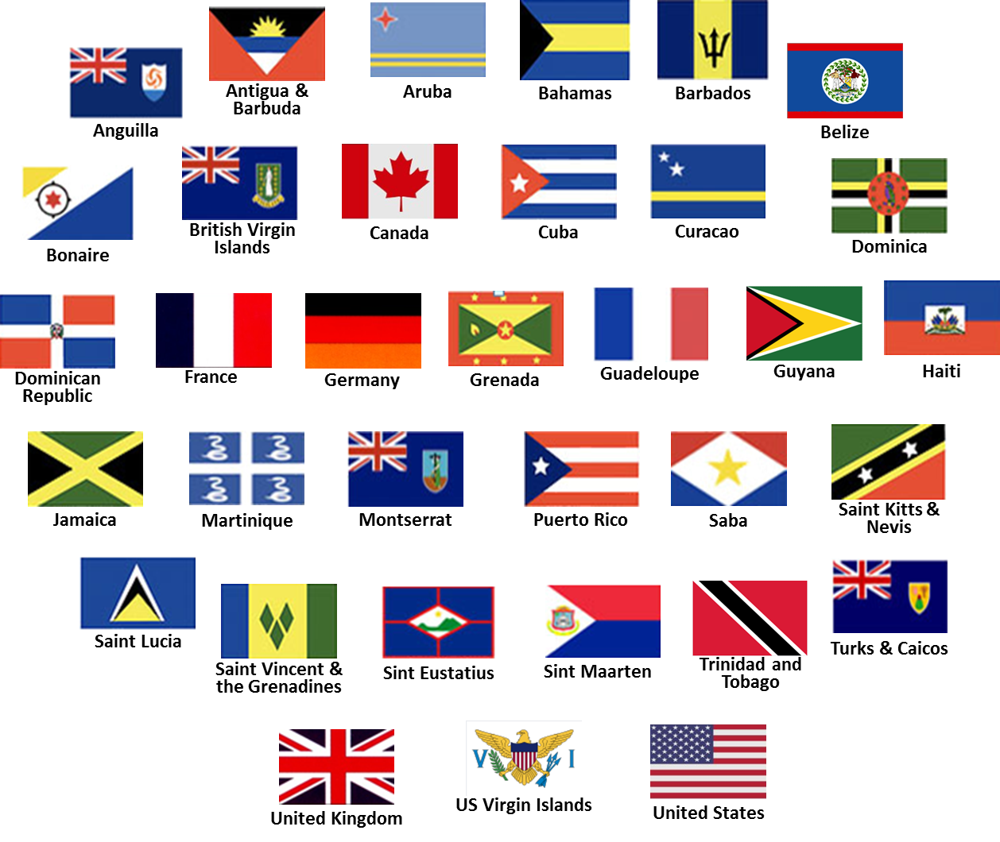

Locations
Carnival is held many places around the world. In 2017 alone, across North America, five (5) Canadian provinces and 27 US cities are scheduled to host a Caribbean Carnival. Twenty-seven (27) cities in the United Kingdom, a few cities in Europe as well as Tokyo,Japan also host Caribbean Carnivals. This goes well beyond the Central and South American locales and the thirty-two (32) Caribbean islands that some would automatically assume host as well.
Trinidad and Tobago and some Caribbean islands continue to have Carnival during the pre-Lenten season. With the increase of Caribbean expats and soca enthusiasts in various regions, Caribbean Carnivals in the Americas and Europe have flourished.
Other
"Dimanche Gras" takes place on the Sunday night before Ash Wednesday. Here the Calypso Monarch is chosen (after competition) and prize money and a vehicle awarded. The King and Queen of the bands are crowned, where each band parades costumes for two days and submits a king and queen, from which an overall winner is chosen. These usually involve huge, complex, beautiful well-crafted costumes, that includes 'wire-bending'.

Flags of the various countries that have a Caribbean Carnival
Male masquerader at Jamaica Bacchanal

Female masquerader in Rotterdam